5 min walk
In town
Riverside Market
A lively market beside the Ping from late afternoon, offering a wide choice of food and clothing beneath string lights after dark.
Open in Google Maps: Riverside Market (opens in a new tab)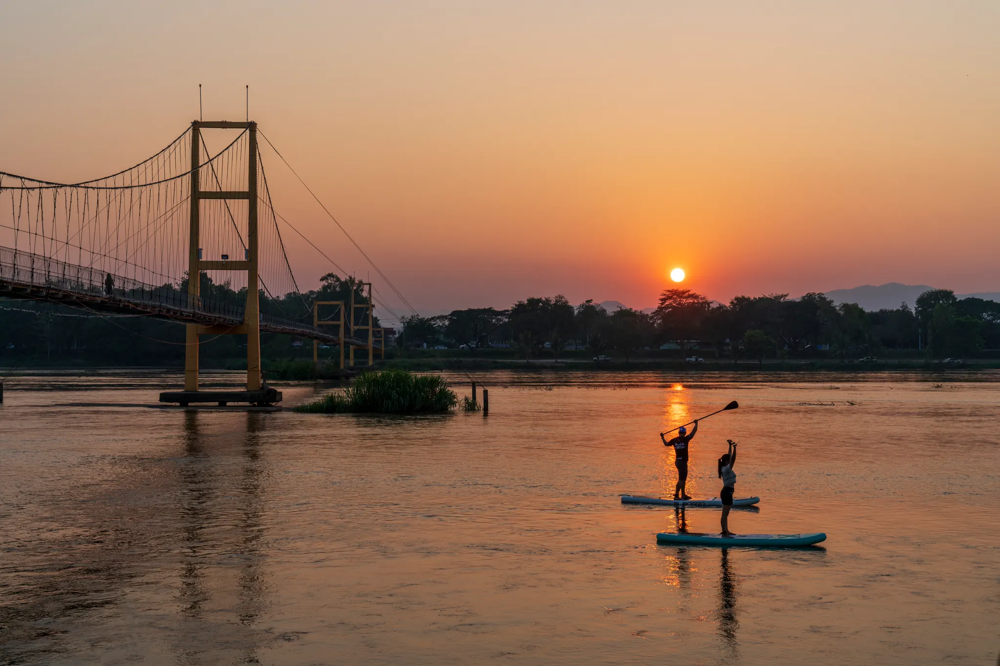
Explore Tak · A local guide
From the Ping River to the forests of Umphang: the nature and culture of Tak.
Start exploringPhotos: TAT Tak Office
Places to go
From riverside walks to forest waterfalls and mountain markets. Our front desk can advise on directions, day or night.
Within walking distance, no car needed
5 min walk
In town
A lively market beside the Ping from late afternoon, offering a wide choice of food and clothing beneath string lights after dark.
Open in Google Maps: Riverside Market (opens in a new tab)
Short walk
Along the Ping River
A riverside path leading to the suspension bridge, a fine viewpoint over the Ping, illuminated after dark.
Open in Google Maps: Riverside Promenade and Suspension Bridge (opens in a new tab)
Hotel tip
At the hotel
Bicycles are available in the lobby for leisurely rides along the Ping.
See hotel facilitiesForests, waterfalls and the city's famous shrine, on easy roads
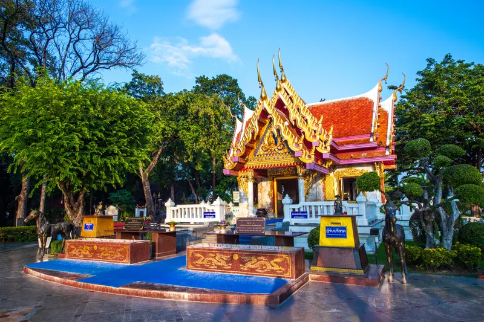
~5 min drive
Tak town
The spiritual heart of Tak, honouring King Taksin the Great.
Open in Google Maps: King Taksin Shrine (opens in a new tab)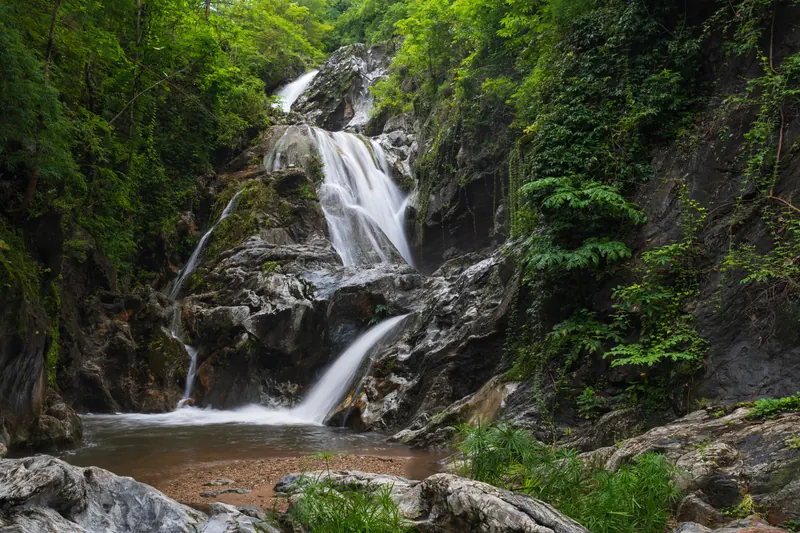
~25 min drive
Tak–Mae Sot road
Gentle forest trails and cascading waterfalls, a short drive west of town.
Open in Google Maps: Lan Sang National Park (opens in a new tab)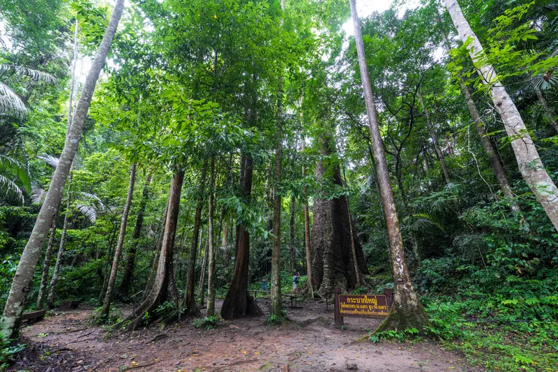
~30 min drive
Tak–Mae Sot road
A forest home to a giant krabak tree, with the Doi Musoe hill-tribe market nearby.
Open in Google Maps: Taksin Maharat National Park (opens in a new tab)One to two hours' drive from the hotel
~1 hr drive
Sam Ngao
Sweeping reservoir views from the dam crest, framed by mountains.
Open in Google Maps: Bhumibol Dam (opens in a new tab)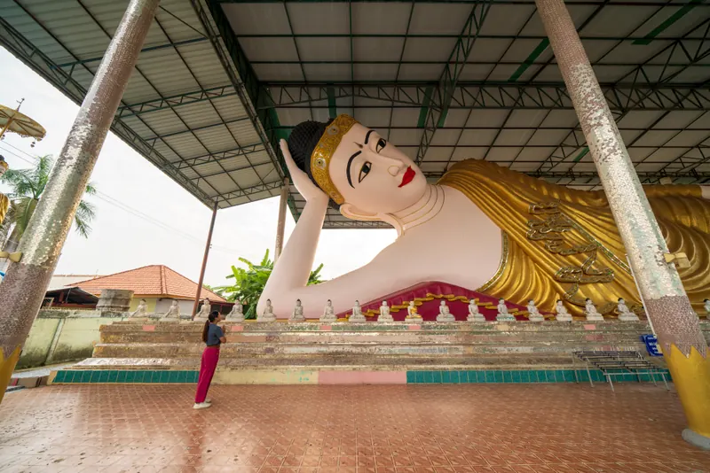
~1.5 hr drive
Mae Sot
A border town where Thai and Burmese cultures meet, home to Wat Thai Wattanaram, the Rim Moei market and the Thai–Myanmar Friendship Bridge.
Open in Google Maps: Mae Sot Border Town (opens in a new tab)Day trip · Mae Sot
Highway 12 winds west over the hills to the Myanmar border. Several more sights lie close to Mae Sot.
Mae Kasa
A golden temple blending Lanna and Burmese styles, home to a revered Buddha image.
Map: Wat Thai Samakkhi (opens in a new tab)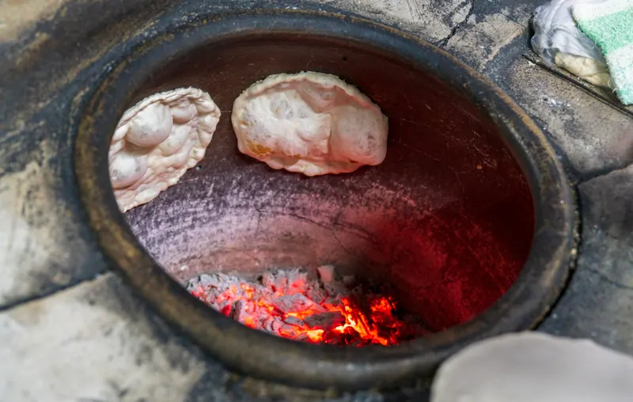
In Mae Sot
A Mae Sot speciality, baked on the walls of a charcoal-heated jar. Locals queue for it early in the morning.
Map: Jar-baked roti (opens in a new tab)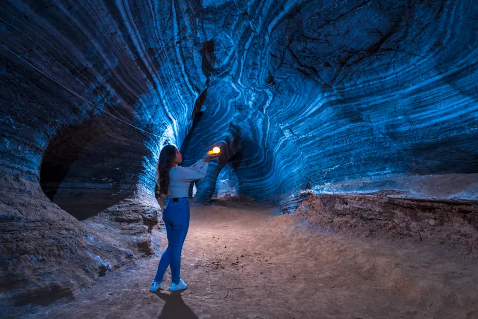
Near Mae Sot
A cave of rare blue-grey walls sheltering a reclining Buddha, about 30 km from town.
Map: Blue Cave (opens in a new tab)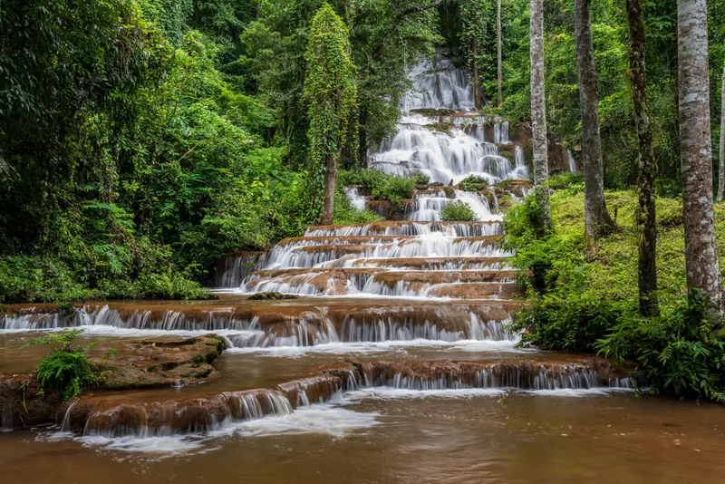
Phop Phra
Water cascades down 97 limestone tiers, just off the road to Umphang.
Map: Pha Charoen Waterfall (opens in a new tab)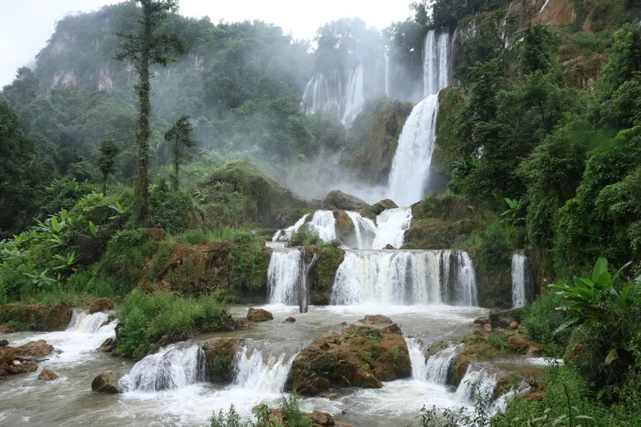
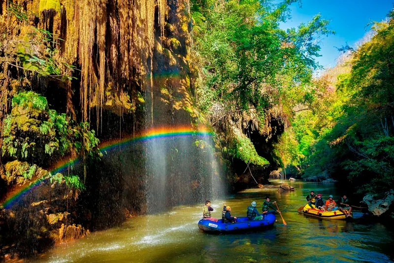
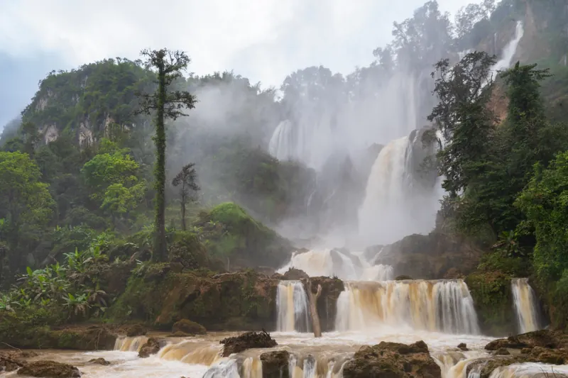
Overnight trip · Umphang
Often called Thailand's largest waterfall, set deep within the Umphang Wildlife Sanctuary. The trip takes at least two nights, as the mountain road from Mae Sot is long and winding. Tours often add Thi Lo Cho, the "rain waterfall", on the same trip.
Road conditions change with the weather. Our front desk can check them before you leave.
Photos: TAT Tak Office

Annual festival
Every November, a line of 1,000 candlelit coconut shells drifts down the Ping in a ribbon of light, right past the hotel.
Read the festival story
Our rooms
Our river-view rooms look out over the calm waters of the Ping.
Book your stay